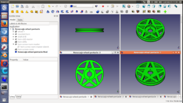
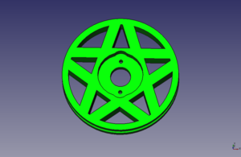
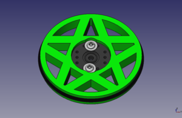
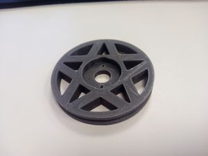
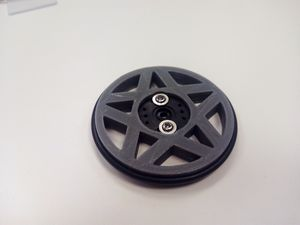
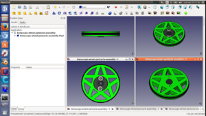
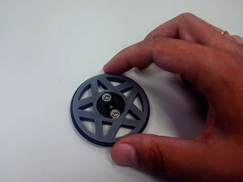

| Github |
|---|


(click para ampliar)
Contenido
[ocultar]Introducción
Rueda para elprintbot Renacuajobot, modelo pentáculo. Modelada con Freecad 0.14. El diseño se ha impreso en una Witbox para validarlo. Funciona.
Descarga
| Renacuajo-wheel-pentacle.fcstd | Rueda RenacuajoBot, modelo pentáculo (Freecad) |
| Renacuajo-wheel-pentacle-assembly.fcstd | Rueda RenacuajoBot, modelo pentáculo. Ensamblado (Freecad) |
| renacuajo-wheel-pentacle.stp | Rueda RenacuajoBot, modelo pentáculo (STEP) |
| renacuajo-wheel-pentacle-assembly.stp | Rueda RenacuajoBot, modelo pentáculo. Ensamblado (STEP) |
| renacuajo-wheel-pentacle.stl | Rueda RenacuajoBot, modelo pentáculo (STL) |
| renacuajo-wheel-pentacle-assembly.stl | Rueda RenacuajoBot, modelo pentáculo. Ensamblado (STL) |
Fotos
| Álbum de fotos |
|---|
|  (click para ampliar) |
 (click para ampliar) |
|  (click para ampliar) |
 (click para ampliar) |
|  (click para ampliar) |
 (click para ampliar) |


Repositorio
- Repositorio: https://github.com/Obijuan/printbot_part_library/tree/master/wheels/Servo-SM-4303R-compatible
Autores
- Nieves Cubo: Autora de la rueda pentacular original
- Juan González: Migrada a Freecad y adaptada al servo SM-S4303R
Licencia
| |
Enlaces
Noticias
- 26/Septiembre/2014: Publicada primera versión de esta página